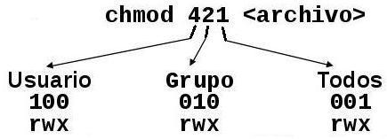

Para leer mas sobre escritorios: El Linux Desktop
(LXDE, MATE/GNOME2 & KDE)
Nota: Windows usa Windows Subsystem for Linux que permite correr Linux sobre Windows como lo hace WINE en Linux (Linux Journal : WLinux Distro).
De los repositorios se guarda el indice de los paquetes disponibles y su información
Microsoft creó un núcleo configurado/modificado por ellos
Herederos de Unix:
Ambos fueron creados en Bell Labs (antes Lucent y ahora Nokia)
Otros:
RTOS:
Linux Kernel 2.6.38-2
Imágenes
Por ejemplo mis scanf()/printf() como van pasando por las capas de software hasta llegar al hardware?
Página del equipo del Kernel & mas sobre versiones
Fuente: Articulo del IEEE sobre 25 años de Linux (ellos usaron el repo del kernel)
Nota: Otros compiladores nuevos pero
ni remotamente tan populares son LLVM y EGCS
Archivo ejemplo: hola.c
file hola
break main
run
Tutorial GCC y GDB & GCC intro & Opciones de debug & Otros debuggers
man <seccion> intro
Listamos todos las intros: man -a intro
Vemos todas las entradas de una sección:
man -k . -s <seccion> | less -S
Usando man online: linux.die.net y un ejemplo de man 3 printf.
Script en bash para convertir el man a HTML: man2html.sh
Nota: Los comandos como "cd" son parte del bash y su ayuda se invoca con: help cd
El usuario root...
¿Por que usar Ubuntu nos facilita sudo?
|
Directorio. |
Descripción |
|---|---|
/bin |
Programas binarios esenciales (como son cp, mv, ls, rm, mkdir, etc.), |
/boot |
Archivos utilizados durante el inicio del sistema (núcleo y discos RAM), |
/dev |
Dispositivos esenciales, |
/etc |
Archivos de configuración utilizados en todo el sistema y que son específicos del anfitrión. |
/lib y /lib64 |
Bibliotecas compartidas esenciales para los binarios de /bin, /sbin y el núcleo del sistema. /lib64 corresponde al directorio utilizado por sistemas de 64-bit. |
|
Directorio. |
Descripción |
|---|---|
/home |
Directorios de inicio de los usuarios locales. |
/mnt |
Sistemas de archivos montados temporalmente. |
/media |
Puntos de montaje para dispositivos de medios, como son las unidades lectoras de discos compactos. |
/opt |
Paquetes de aplicaciones de terceros. |
/proc |
Sistema de archivos virtual que documenta sucesos y estados del núcleo. Contiene, principalmente, archivos de texto. |
|
Directorio. |
Descripción |
|---|---|
/root |
Directorio de inicio del usuario root (super-usuario). |
/sbin |
Binarios de administración de sistema. |
/tmp |
Archivos temporales |
/usr |
Jerarquía secundaria para datos compartidos de solo lectura (Unix system resources). |
/usr/src |
Códigos fuente. Normalmente aquí se instala el código fuente del Kernel de Linux cuando lo instalamos. |
/usr/bin |
Programas binarios (que no son del sistema). Programas particulares del usuario (no el sistema) se instalan aquí. |
|
Directorio. |
Descripción |
|---|---|
/var |
Archivos variables, como son bitácoras, bases de datos, directorio raíz de servidores HTTP y FTP, colas de correo, archivos temporales, etc. |
/var/log |
Archivos y directorios, utilizados para almacenar las bitácoras de eventos del sistema. |
/var/mail |
Directorio para almacenar los buzones de correo de usuarios. |
/var/tmp |
Archivos temporales que prevalecen después de un reinicio. |
/var/lib |
Información de estado variable. Algunos servidores como MySQL almacenan sus bases de datos dentro de este directorio. |
Linux, tanto como Unix, es un sistema multiusuario
Los permisos de cualquier archivo cuenta con tres partes:
Por lo tanto un archivo pertenece a un propietario y a un determinado grupo y, según los permisos que tenga asociados el archivo, se podrá acceder a él o no.
[ignacio@thinkpad /]$ ls -l
total 173
drwx--x--x 2 root root 4096 Jun 10 2002 bin
drwx--x--x 3 root root 1024 Jun 17 11:59 boot
drwx--x--x 14 root root 81920 Jun 24 03:30 dev
drwx--x--x 66 root root 8192 Jun 23 14:57 etc
drwxr-xr-x 3 root root 8192 Jun 10 2002 faqs
drwx--xr-x 23 root root 4096 Jun 22 04:07 home
drwx--x--x 7 root root 4096 Jun 10 2002 lib
drwx--x--x 8 root root 4096 Jun 10 2002 mnt
drwx--x--x 3 root root 4096 Jun 6 10:03 opt
dr-xr-xr-x 148 root root 0 Jun 17 08:56 proc
drwxr-x--- 10 root root 4096 Jun 23 13:16 root
drwx--x--x 2 root root 4096 Jun 10 2002 sbin
drwx------ 2 root root 4096 Jun 18 21:20 scripts
Por Ejemplo:
En este ejemplo damos el permiso 421, esto es permiso de lectura al propietario/usuario, escritura al grupo y ejecución a cualquier otro.
Existe también la posibilidad de hacerlo más humano:
Usando chown: Se le pasa el nombre de usuario y grupo
(a mover a otra sección)
{kind=link}
{kind=link}
{kind=link}
{kind=link}
{kind=link}
{kind=link}